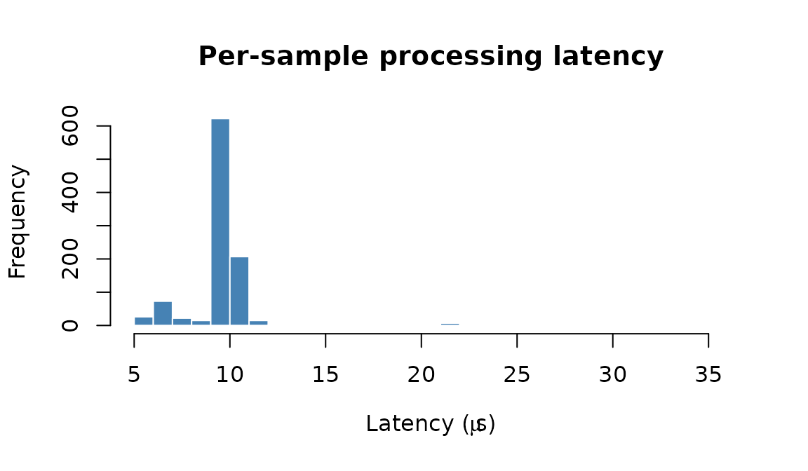
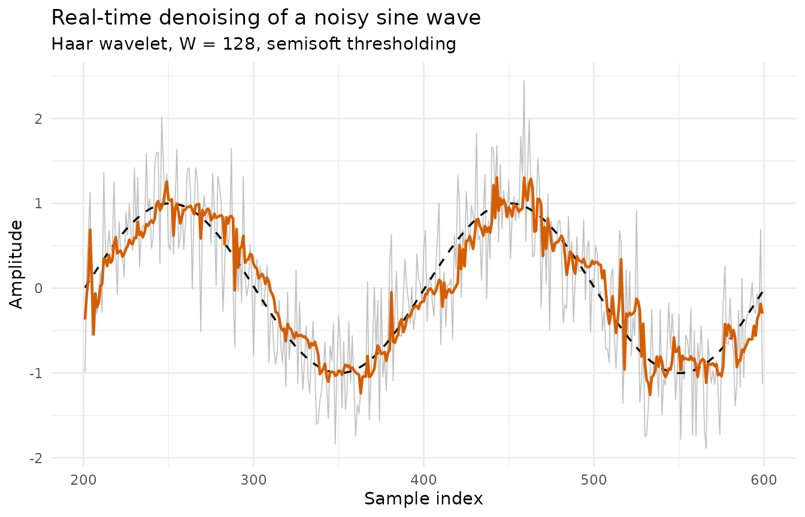

Motivation
In many applications, data arrives one point at a time: sensor readings from an IoT device, financial tick data, real-time audio, physiological signals from wearable monitors. The analyst needs a denoised estimate immediately after each new observation, without waiting for the entire series to be collected.
rLifting addresses this use case with
new_wavelet_stream(), a closure-based stream processor
backed by a high-performance C++ ring buffer. Each call to the processor
accepts a single numeric value and returns the denoised estimate in
amortized
time, regardless of the window size or decomposition depth.
How it works
The stream processor maintains a fixed-size sliding window of the most recent observations. When a new sample arrives:
- The oldest sample is evicted from the ring buffer and the new one is inserted (O(1) ring buffer update).
- The lifting transform is applied to the current window contents.
- The wavelet coefficients are thresholded using the specified method
(hard, soft, or semisoft) with an adaptive threshold controlled by
alpha(decay) andbeta(gain). - The inverse lifting transform reconstructs the denoised signal.
- The most recent value of the reconstruction is returned as the output.
During the warm-up phase (the first samples), the raw input is returned directly since the window is not yet full.
Example: denoising a noisy sine wave
We simulate 1000 samples from a sine wave with additive Gaussian noise ().
library(rLifting)
if (!requireNamespace("ggplot2", quietly = TRUE)) {
knitr::opts_chunk$set(eval = FALSE)
message("Required package 'ggplot2' is missing. Vignette code will not run.")
} else {
library(ggplot2)
}
set.seed(42)
n = 1000
t = seq(0, 10 * pi, length.out = n)
clean = sin(t)
noisy = clean + rnorm(n, sd = 0.5)Configuring the stream processor
stream_proc = new_wavelet_stream(
scheme = lifting_scheme("haar"),
window_size = 128,
levels = floor(log2(128)), # 7 levels, full decomposition
method = "semisoft",
alpha = 0.5,
beta = 1.0
)The key parameters:
| Parameter | Value | Effect |
|---|---|---|
window_size |
128 | Sliding window width; larger → smoother but more latent |
levels |
7 | Decomposition depth; floor(log2(W))
|
method |
semisoft | A compromise between hard and soft shrinkage |
alpha |
0.5 | Threshold decay; higher → adapts faster |
beta |
1.0 | Threshold scale factor |
Processing loop
In a real application, the loop below would be replaced by an event listener (WebSocket, MQTT, serial port, or any streaming API). Here we iterate over the simulated vector:
output = numeric(n)
process_time = numeric(n)
for (i in 1:n) {
start = Sys.time()
output[i] = stream_proc(noisy[i])
end = Sys.time()
process_time[i] = as.numeric(end - start)
}
df = data.frame(
Time = 1:n,
Noisy = noisy,
Filtered = output,
Truth = clean
)Results
Per-sample latency
Because the core engine is written in zero-allocation C++, the per-sample overhead is extremely low:
# Exclude the first sample (JIT / initialization overhead)
latency_us = process_time[-1] * 1e6
cat(sprintf("Median latency: %.1f \u00b5s\n", median(latency_us)))
#> Median latency: 9.5 µs
cat(sprintf("95th percentile: %.1f \u00b5s\n", quantile(latency_us, 0.95)))
#> 95th percentile: 10.7 µs
cat(sprintf("Max latency: %.1f \u00b5s\n", max(latency_us)))
#> Max latency: 35.5 µs
hist(latency_us,
main = "Per-sample processing latency",
xlab = expression(paste("Latency (", mu, "s)")),
col = "steelblue", border = "white", breaks = 40)
This latency is well within the requirements of most real-time systems. For reference, audio at 44.1 kHz allows ~22.7 µs per sample, and most sensor applications operate at much lower frequencies (1–1000 Hz).
Signal reconstruction
We visualize a segment after the warm-up phase () to see the denoising quality in steady state:
seg = subset(df, Time > 200 & Time < 600)
ggplot(seg, aes(x = Time)) +
geom_line(aes(y = Noisy), colour = "grey75", linewidth = 0.3) +
geom_line(aes(y = Truth), colour = "black", linetype = "dashed",
linewidth = 0.6) +
geom_line(aes(y = Filtered), colour = "#D55E00", linewidth = 0.8) +
labs(title = "Real-time denoising of a noisy sine wave",
subtitle = "Haar wavelet, W = 128, semisoft thresholding",
x = "Sample index", y = "Amplitude") +
theme_minimal()
The filtered signal (orange) closely tracks the true sine wave (dashed black), while the raw noisy input (grey) fluctuates around it.
Reconstruction accuracy
# Exclude warm-up phase
steady = df$Time > 128
mse_noisy = mean((df$Noisy[steady] - df$Truth[steady])^2)
mse_filtered = mean((df$Filtered[steady] - df$Truth[steady])^2)
cat(sprintf("MSE (noisy): %.4f\n", mse_noisy))
#> MSE (noisy): 0.2485
cat(sprintf("MSE (filtered): %.4f\n", mse_filtered))
#> MSE (filtered): 0.0549
cat(sprintf("Noise reduction: %.1f%%\n", (1 - mse_filtered / mse_noisy) * 100))
#> Noise reduction: 77.9%The causal stream processor achieves meaningful noise reduction in real-time, with no look-ahead and constant memory usage.
Choosing parameters
- A larger
window_sizecaptures more context and denoises better, but introduces more latency (the filter output reflects the state of the last samples). For most applications, to offers a good balance. - The
levelsparameter controls the decomposition depth. Setting it tofloor(log2(W))performs a full decomposition. - The
methodparameter affects the aggressiveness of denoising:"hard"preserves peaks better but can leave artifacts;"soft"is smoother but may over-shrink;"semisoft"offers a compromise. - The
alphaandbetaparameters control the adaptive threshold. Higheralphamakes the threshold adapt faster to changing noise levels.beta > 1makes the threshold more conservative (less denoising);beta < 1makes it more aggressive.